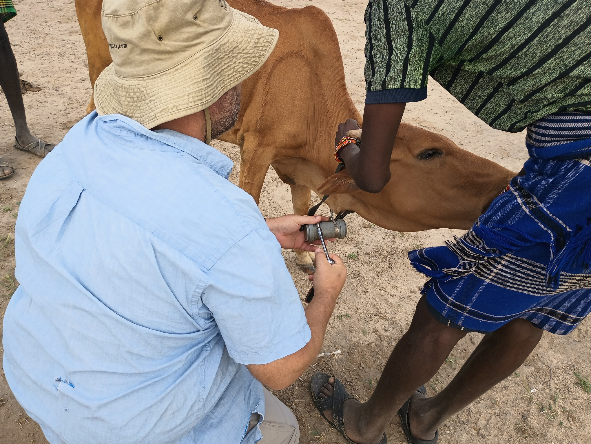
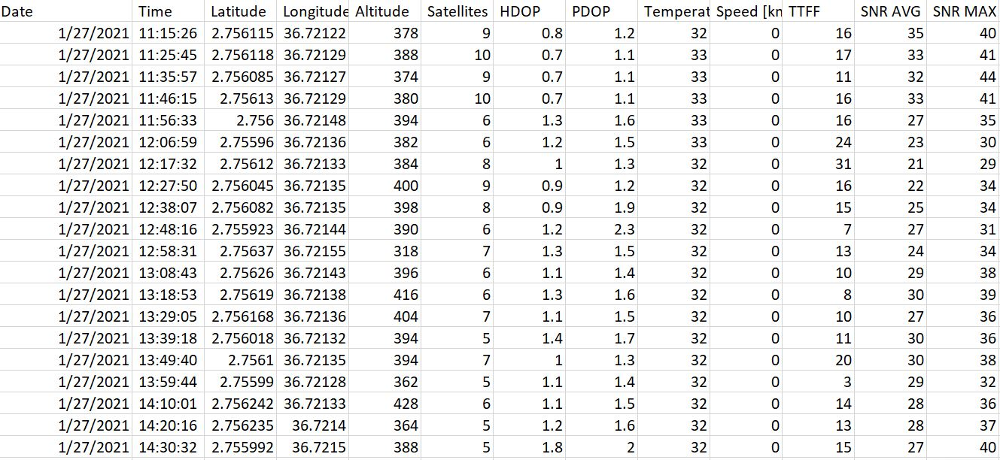
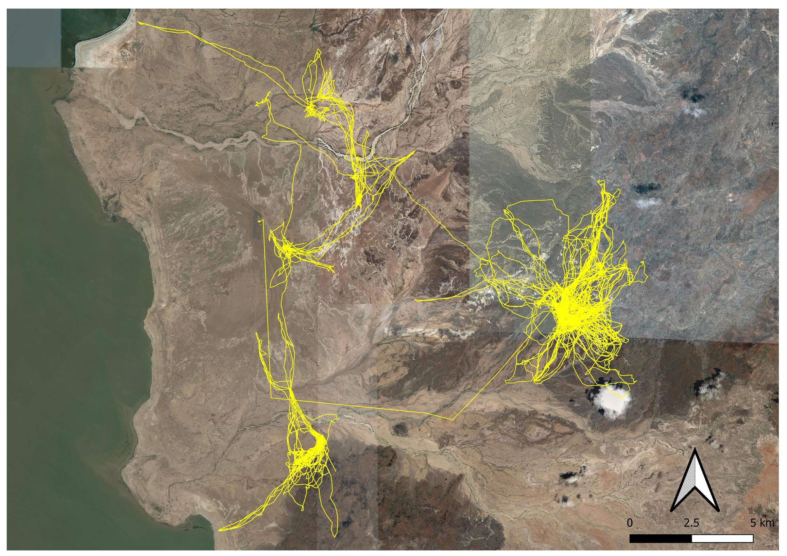
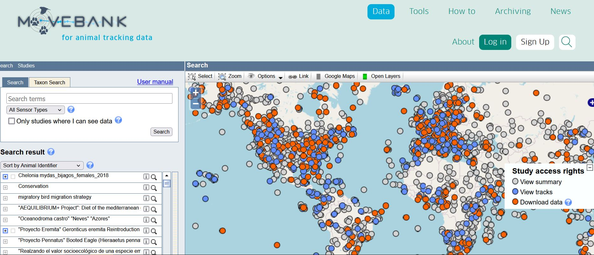
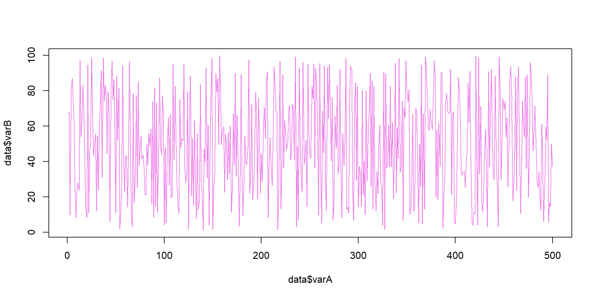
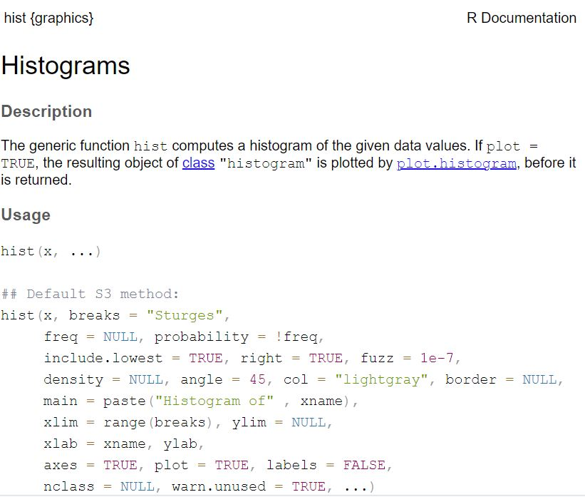

Environmental Data Analysis and Visualization
Dataset of the day
Photo credit: Shenandoah National Park via CBC.ca
Dataset of the day
Dataset of the day
Dataset of the day
Movebank
Checking in
How did it go last week?
How much do you feel like you remember?
Ready to keep going?
The flow of data
Last week we worked on going from raw data to visualizations using base R commands and functions. This week, we’ll be focused on making code easier to save, edit, modify, and integrate with data.
Scripts
An R script is a text document that contains lines of R code that can be delivered individually or collectively to the command line.
Scripts
An R script is a text document that contains lines of R code that can be delivered individually or collectively to the command line.
Scripts
Scripts are text files, so they can be written, saved, and shared easily.
Activity
Open RStudio, go to the File menu, and create a new script. In that script, add some code:
Create a variable called myName and assign your name as a character string
Create a second variable called introduceMe and assign the character string “Hi, my name is”. Be sure to include a space at the end of the character string.
Use these two variables as arguments in the
paste0function.
Highlight all of the code in the script and click Run.
Comments
Comments are useful for documenting what a piece of code does, both for you and for other users. They can also be helpful for temporarily taking out a piece of code from a script without having to delete it.
File systems
File systems
The file system is a means of storing and retrieving files on a computer.
Thinking about file systems

Pptudela, Wikimedia Commons, CC BY-SA 3.0
Talking about file systems
Photo credit: Daisuke Tashiro - Flickr, CC BY-SA 2.0
Photo credit: Te Punaha Matatini
File systems
The file system is a means of storing and retrieving files on a computer. Many systems are based on a hierarchical collection of directories.
Reasons for keeping files organized
Makes it easier for you to find and update files
Makes it easier for others to understand the logic of the project
Ensures files can be located without user input
Losing track of file locations can be frustrating for you…

Photo credit: LaurMG., CC BY-SA 3.0
…and can make your code effectively useless to others.
Activity: Your file system
Create a file system for saving your work this week. If you’ve already got one going, see how it compares with our discussion so far and think about whether this would be a good time to reogranize.
Think about the following
Will you be able to find it easily?
Will someone else be able to understand how this folder structure works?
Once you’ve done this, go to the File drop-down menu in RStudio and select Save As to store your script inside the appropriate folder for this week’s lecture
Tips for naming files and folders
Avoid whitespaces
- Use camel case (myLabExercise) or snake case (my_lab_exercise)
Avoid special characters
- ~ ! @ # $ % ^ & * ( ) ` ; < > ? , [ ] { } ’ “ |
Try and keep them short
Avoid the term final (e.g., code_exercise_3_finalFinal.R)
- Instead, use version numbers or dates (e.g., YYYY-MM-DD)
Above all else… BE CONSISTENT!
Recommended practices
Do not modify your raw data manually (or at all).
Data manipulation should work like a conveyor belt where it stops at checkpoints. e.g., it gets modified/cleaned/analyzed, and then it moves on.
Always have collaborators in mind. Work towards shareable code. Have public awareness.
Consistency (within your project) is key.
Getting help
Getting help
My recommended approach to problems you might encounter is
try and change a few things, and if that doesn’t work
check the Help documentation, and if the answer isn’t there
search for a solution on the web, and if that fails
ask someone who can help you
Accessing help documentation
Help documents describe what functions do, what arguments they take, and what kind of objects they will return.
You can search help using the Help tab in the Outputs pane.
Accessing help documentation
You can also quickly look up a function’s help document by typing it into the command line preceded by a question mark (?). For example:
?hist
Reading the help documentation
Reading the help documentation
Help documents include:
Description What does the function do?
Usage How do you call it in R?
Arguments What arguments does it take and what objects should be used?
Reading the help documentation
Help documents include:
Details Specifics about how different arguments are used within the function
Value The object(s) returned by the function and their structure
Examples Snippets of code showing how the function is used
Activity
Try looking at the entry for some of the functions we’ve used so far. Examples include:
reppastescanrnorm
See if you can use help to find the function for the Kolmogorov-Smirnov Test.
What about getting help from ChatGPT/Claude/etc?
This sits somewhere between finding a solution on the web and asking someone for help. Under certain conditions, Large Language Models (LLMs) like ChatGPT can be incredibly helpful for coding, data analysis, etc.
What are the risks?
LLMs will confidently present incorrect/incomplete solutions as correct.
LLMs may provide solutions that “work”, but use deprecated functions, misnamed packages, or convoluted methods.
Over multiple, iterated queries, an LLM may produce bloated code or fail to carry over previously requested items.
Guidelines for using LLMs for class work
Please refrain from using LLMs during class sessions and to complete in-class lab exercises.
If you are struggling with a concept (like the structure of arguments in a function), try asking the LLM to provide an example. Be sure to also ask it to explain how that example works.
If you keep running into an error, you might try pasting your code into the LLM and asking it to identify errors. Be sure to also ask it how/why this causes an error.
Guidelines for using LLMs for class work
Asking LLMs to draft code is risky if you don’t know what you’re looking for.
Divide your request into parts to avoid misunderstanding.
Ask for multiple options, you may recognize some solutions better than others.
Think of it as a conversation with the LLM, and make sure you understand what it is suggesting. Try making changes to the code it provides to get a better understanding of how it works.
Guidelines for using LLMs for class work
If you use code drafted by an LLM, always test it, and provide an explanation of how it works in the comments. If you use an LLM to assist with an assignment, be sure to document this in your submission (see Canvas for instructions).
Lab exercise 2
Working from the file system: what doing it right looks like
Importing/exporting data
More on what to do when things go wrong
Comments
Comments are text preceded by a comment character. For R, the comment character is
#. When R receives this at the command line, it knows not to run it.